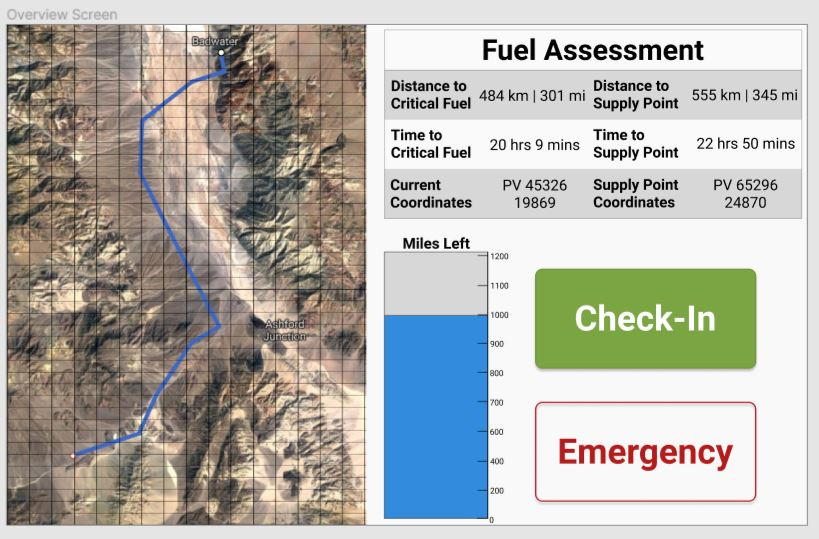
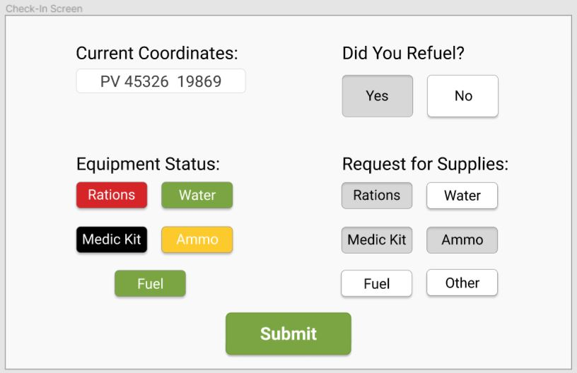

ATHENA is a fuel logistics application for US Army unit commanders and logistics coordinators. As lead UI/UX Designer, I conducted customer discovery and feedback interviews, then created mock-ups when given wireframes and requirements. The product's design went through iterative design over the course of three months before an interactive UI was demoed.
My team and I in total conducted 203 customer discovery and feedback interviews. We talked to potential users within the military to determine requirements for this project, as well as determine any standards to abide by.
I first started sketches to figure out the general layout of the application, then moved to wireframes. I decided to focus on iterating the wireframes as our application requirements were still not clearly defined.
After our team had a sense of the requirements and functions, I went into designing mock-ups to showcase to our customer and users. For me, this was a very rewarding experience that allowed me to experiment with different design tools. After going through four rounds of feedback interviews with users, I moved on to making the mock-up interactive for our demo session.
 